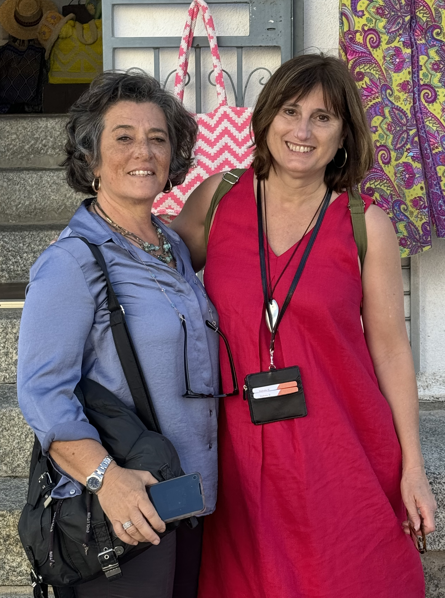
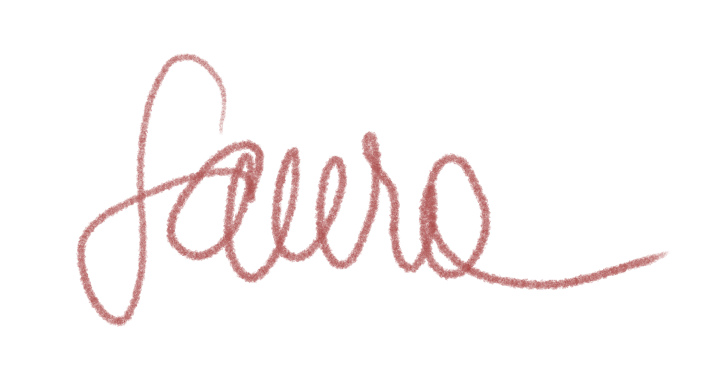

Living over three decades abroad — first in Germany, then in the United States — has gifted me with new eyes through which I can see Italy both as a native Italian, and as an admiring foreigner. We Italians are used to the beauty surrounding us, to the point that we often don’t see it anymore. The first tour I created for my American guests has made me keenly aware of the richness of my home country, sparking the unquenchable curiosity and awe behind each and every one of my tours.
